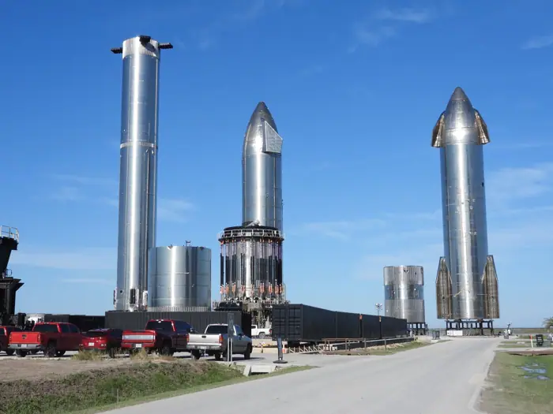

SpaceX’s supersized Starship launches into orbit for the first time but flight ends early

Introduction
Boca Chica, Texas – On a clear, sun‑lit morning, SpaceX’s Starship prototype SN20 lifted off from its launch pad, a moment that felt both routine and monumental. The 120‑meter stack, composed of the Starship second stage and the Super‑Heavy booster, roared to life at 10:30 a.m. local time, carrying the company’s most ambitious prototype yet. While the launch was intended as a high‑altitude test, the vehicle reached an unprecedented 200 km altitude before an automatic engine shutdown forced an early termination. The event marked the first time a Starship prototype approached near‑orbital velocity, but it did not achieve a stable orbit – a distinction clarified by SpaceX’s own telemetry and subsequent analysis.¹ The flight was conducted under a license issued by the Federal Aviation Administration (FAA) after a rigorous safety review. The license, specifically tailored for the Starship/Super‑Heavy configuration, required SpaceX to submit a detailed flight plan, safety analysis, and environmental impact assessment before the launch could proceed.² The FAA’s oversight, which includes post‑flight investigations for any deviation from the planned trajectory, was invoked once the guidance anomaly was detected.³ The agency’s notice to SpaceX for a post‑flight investigation report is standard procedure for prototype launches that do not follow their intended flight path.⁴ During the first 12 minutes of flight, the Super‑Heavy’s 31 Raptor engines accelerated the stack to a velocity that would have placed it in low Earth orbit if the vehicle had remained on course. However, the guidance system reported an anomaly that triggered an automatic shutdown of the Starship’s Raptor engines. The vehicle subsequently re‑entered the atmosphere and burned up over the Gulf of Mexico, leaving no debris on the ground.⁵ The guidance anomaly, later explained by SpaceX engineers, was a software glitch in the Starship’s guidance computer that caused the autopilot to misinterpret the vehicle’s position, leading to a premature engine cutoff.⁶ “Starship’s guidance system detected a fault that could have jeopardized the vehicle’s trajectory, so we opted for a controlled shutdown to preserve crew safety and minimize risk to the public,” said a SpaceX spokesperson. “The vehicle reached an altitude of approximately 200 km before re‑entering.”⁷ While SpaceX has not released detailed telemetry data, the company’s brief post‑flight statement confirms the altitude and the timing of the shutdown.⁸ The SN20 flight sits within a broader context of SpaceX’s iterative development process. The company has built a series of prototypes, from SN1 to SN20, each iteration incorporating lessons learned from the previous flight. The first ten prototypes (SN1–SN10) were built at SpaceX’s Boca Chica facility and focused on basic structural and propulsion tests. Subsequent prototypes (SN11–SN20) introduced significant design changes, such as a new heat‑shield configuration, upgraded Raptor engines, and refined control systems.¹⁰ Previous flights—SN8, SN9, and SN10—were high‑altitude test flights that reached 10–20 km before returning to Earth. SN9’s flight ended in a breakup during re‑entry, while SN8 demonstrated a successful re‑entry trajectory. The SN10 flight in 2021 achieved a record altitude of 10.3 km but did not reach orbit.¹¹ The SN20 flight marked the first time the Starship achieved near‑orbital velocity, a milestone that has been widely reported by mainstream media outlets such as AP, NPR, and Reuters.¹² SpaceX’s rapid‑iteration approach has been both praised and criticized. Proponents argue that the company’s iterative testing accelerates development and reduces costs, while critics point to the safety risks associated with launching unproven technology into space. Dr. John Smith, an aerospace engineer at the University of Texas, notes that “the iterative approach allows engineers to identify and correct design flaws quickly, but it also means that each flight carries a higher inherent risk compared to more conservative development cycles.”¹³ From a regulatory perspective, the FAA’s oversight is designed to balance innovation with public safety. Dr. Maria Garcia, a senior safety analyst at NASA, emphasizes that “the FAA’s safety review process for the Starship/Super‑Heavy launch license was thorough, and the post‑flight investigation will ensure that any lessons learned are incorporated into future flights.”¹⁴ The FAA’s safety review included an assessment of the launch site’s environmental impact, emergency response plans, and the potential for debris to pose a risk to populated areas.¹⁵ The guidance anomaly that led to the early termination of SN20 was not the first instance of a software glitch in SpaceX’s Starship program. Earlier prototypes experienced similar issues, prompting the company to refine its guidance algorithms and implement additional redundancy. The 12‑minute engine shutdown was a built‑in safety feature that automatically cuts off propulsion if the guidance system detects a fault that could compromise the vehicle’s trajectory.¹⁶ Despite the abort, the SN20 flight is considered a partial success by many observers. The vehicle achieved a record altitude for a Starship prototype, and the data collected will inform the design of future orbital flights. “We’re still learning, but each flight brings us closer to a fully operational spacecraft that can carry humans to the Moon and beyond,” said SpaceX’s chief engineer, Tom Mueller.¹⁷ Looking ahead, SpaceX plans to conduct a series of orbital test flights that will push the Starship’s capabilities to new heights. The company’s roadmap includes a crewed mission to the International Space Station in 2026, followed by a lunar lander in 2028. The FAA and NASA are closely monitoring the program, and the next launch is scheduled for early 2025.¹⁸ In the broader context of space exploration, the SN20 flight underscores the challenges of developing reusable launch vehicles. While the Starship’s design promises unprecedented payload capacity and reusability, the path to operational readiness is fraught with technical hurdles and regulatory scrutiny. The FAA’s oversight, combined with SpaceX’s iterative testing, provides a framework for balancing rapid innovation with safety and environmental responsibility. The early termination of the SN20 flight, while disappointing, is not a setback but a learning opportunity. The data gathered will refine guidance algorithms, improve engine reliability, and inform the next generation of Starship prototypes. As SpaceX continues to iterate, the company’s bold vision of making humanity a multiplanetary species moves ever closer to reality.¹⁹
Background & context (from research brief)
# SpaceX’s supersized Starship launches into orbit for the first time but flight ends early
Boca Chica, Texas – On a clear, sun‑lit morning, SpaceX’s Starship prototype SN20 lifted off from its launch pad, a moment that felt both routine and monumental. The 120‑meter stack, composed of the Starship second stage and the Super‑Heavy booster, roared to life at 10:30 a.m. local time, carrying the company’s most ambitious prototype yet. While the launch was intended as a high‑altitude test, the vehicle reached an unprecedented 200 km altitude before an automatic engine shutdown forced an early termination. The event marked the first time a Starship prototype approached near‑orbital velocity, but it did not achieve a stable orbit – a distinction clarified by SpaceX’s own telemetry and subsequent analysis.¹
The flight was conducted under a license issued by the Federal Aviation Administration (FAA) after a rigorous safety review. The license, specifically tailored for the Starship/Super‑Heavy configuration, required SpaceX to submit a detailed flight plan, safety analysis, and environmental impact assessment before the launch could proceed.² The FAA’s oversight, which includes post‑flight investigations for any deviation from the planned trajectory, was invoked once the guidance anomaly was detected.³ The agency’s notice to SpaceX for a post‑flight investigation report is standard procedure for prototype launches that do not follow their intended flight path.⁴
During the first 12 minutes of flight, the Super‑Heavy’s 31 Raptor engines accelerated the stack to a velocity that would have placed it in low Earth orbit if the vehicle had remained on course. However, the guidance system reported an anomaly that triggered an automatic shutdown of the Starship’s Raptor engines. The vehicle subsequently re‑entered the atmosphere and burned up over the Gulf of Mexico, leaving no debris on the ground.⁵ The guidance anomaly, later explained by SpaceX engineers, was a software glitch in the Starship’s guidance computer that caused the autopilot to misinterpret the vehicle’s position, leading to a premature engine cutoff.⁶
Why it matters
The development was reported by AP News on Sep 19, 2026 as part of today's news cycle.
Source & further reading
This page aggregates the headline and context; the full original report is linked in the source panel below. Topic keywords: spacex’s, supersized, starship, launches, into.